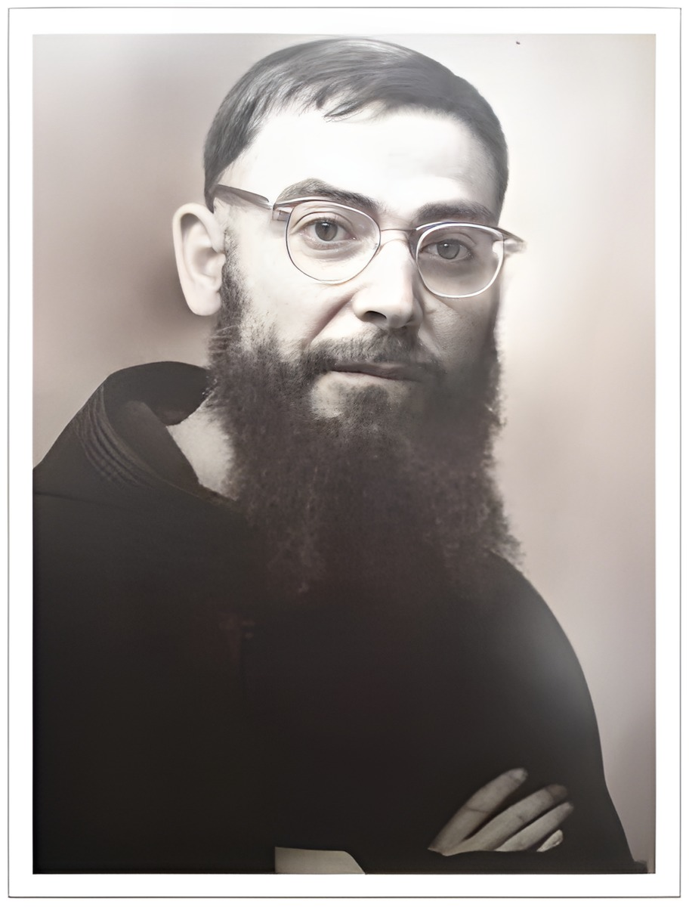

Padre Guillermo de Castellana
En 1937, un 29 de junio recibe la Ordenación Sacerdotal, su vida como religioso y sacerdote se caracterizó por su fiel observancia de la disciplina, de los deberes de comunidad, por su gran espíritu de oración y de trabajo.
Pero siempre inquieto por capacitarse, se doctoró en Filosofía y Ciencias Sociológicas en la Universidad Internacional La Gregoriana de Roma; su tesis tituló: "Las bases filosóficas del Comunismo, en el pensamiento de su más grande crítico".
Participa además en tres congresos internacionales de Filosofía así: En Roma Italia en 1944; Mendoza - Argentina 1947, donde hace su disertación "El Comunismo Científico destruye la personalidad"; en Barcelona - España 1949 habla de "La Metafísica en el Comunismo". En estos tiempos desempeño el cargo de Director de estudios de Filosofía y Sociología en Salemi y luego en Plermo. Además, su sensibilidad y celo apostólico, lo habían llevado a organizar en Salemi, un oratorio con el fin de educar y orientar a muchas niñas. Pero trasladado a Palermo continúa su obra en un barrio muy pobre llamado Danisini. Ahí fue un verdadero apóstol y padre con niñas de escasos recursos, a quienes asistía espiritualmente con sus conferencias sobre religión, moral, cultura y materialmente brindándoles alimentación en un restaurante.
Es memorable el entusiasmo con que preparó a este grupo de niñas de su oratorio y vestidas de las mejores galas, las llevó hasta Roma a presenciar la canonización de Santa María Goretti.
Fundador de:
- La Asociación Escolar María Goretti
- La I.E.M. María Goretti
- La Universidad CESMAG
- Iniciador y promotor de la Filosofía Personalizante y Humanizadora
- Promotor del desarrollo humano integral de la niñez y de la juventud femenina
Obras
- Angelicalmente Pura
- Un desconocido en el Club
- Bellas Leyendas Cristiana
- Flor Ensangrentada
- Las bienaventuranzas de la mujer
- Normas para una niña bien educada
- Recetas para ser Feliz
- Novena a Santa María Goretti
- Catecismo de la cultura Franciscana
- La vida del Cristiano es una vida de espera
- Filosofía Personalizante y Humanizadora